Media#
Introduction#
Scikit-rf supports S-Parameters simulations of transmission line models such as hollow waveguide, coaxial, microstripline and freespace among others.
The Media object stores the properties of a media, such as the propagation constant and the characteristic impedance. The network objects - like a line of a given length - are generated from the media.
This tutorial illustrates how to create networks using several kinds of media. It also explains the most common pitfalls regarding the network port impedance and characteristic impedance.
The singular of the Latin word media is medium, which means middle or center. For clarity’s sake, media is used for both singular and plural in scikit-rf.
RG58C/U coaxial cable#
Two arguments are common to all media constructors:
frequency(required)z0_port(optional)
The frequency axes frequency is a Frequency object defining the media band.
The port impedance z0_port is optional and is used to renormalize from the media characteristic impedance z0 to the port impedance of a simulated measurement.
If no port impedance z0_port is specified, the lines have the raw characteristic impedance z0 of the media.
An example with an RG58C/U flexible coaxial cable media follows.
Simulating a VNA measurement#
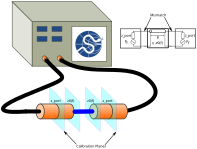
[1]:
# various initialization
%matplotlib inline
import matplotlib.pyplot as plt
import skrf as rf
# import the desired media and the frequency axis
from skrf import Frequency
from skrf.media import Coaxial
rf.stylely()
# frequency
f_rg58 = Frequency(1, 5, 101, 'GHz')
# media with z0_port the port impedance of the VNA
rg58 = Coaxial(f_rg58, Dint = 0.91e-3, Dout = 2.95e-3, epsilon_r = 2.3, z0_port = 50)
print(rg58)
Coaxial Media. Coaxial Media. 1.0-5.0GHz, 101 points.
Dint = 0.91 mm, Dout = 2.95 mm
z0 = (46.6, -0.1j)-(46.5, -0.0j) Ohm
z0_port = (50.0, 0.0j)-(50.0, 0.0j) Ohm
The Media has a characteristic impedance z0 of approximately 47 Ohm. The port impedance z0_port is 50 Ohm. The propagation constant gamma is also computed from the Media parameters. These properties defines the transmission line model.
[2]:
print(f'z0 = {rg58.z0[0]}')
print(f'z0_port = {rg58.z0_port[0]}')
print(f'gamma = {rg58.gamma[0]}')
z0 = (46.557679343366004-0.05941866252040144j)
z0_port = 50.0
gamma = (0.040617114947926004+31.82566778491332j)
Let’s create a line network corresponding to a 100 millimeter length of coax.
2-Port Network: '100 mm, z0 Ohm', 1.0-5.0 GHz, 101 pts, z0=[50.+0.j 50.+0.j]
The characteristic impedance z0of the media has been renormalized to port impedance z0_port. The network has a port impedance z0 equal to z0_port.
In some cases, lines of arbitrary impedance are required without creating multiples media. The impedance of the line can be overridden at construction. The resulting network is renormalized to z0_port.
[4]:
rg58_25ohm_line = rg58.line(100, unit = 'mm', z0 = 25, name = '100 mm, 25 Ohm')
print(rg58_25ohm_line)
2-Port Network: '100 mm, 25 Ohm', 1.0-5.0 GHz, 101 pts, z0=[50.+0.j 50.+0.j]
Let’s plot the two lines S-Parameters.
[5]:
fig, axes = plt.subplots(1, 2, figsize = (8, 3.5))
# return loss
rg58_line.plot_s_db(0, 0, ax = axes[0])
rg58_25ohm_line.plot_s_db(0, 0, ax = axes[0])
axes[0].set_title('Return Loss')
rg58_line.plot_s_db(1, 0, ax = axes[1])
rg58_25ohm_line.plot_s_db(1, 0, ax = axes[1])
axes[1].set_title('Insertion Loss')
plt.tight_layout()
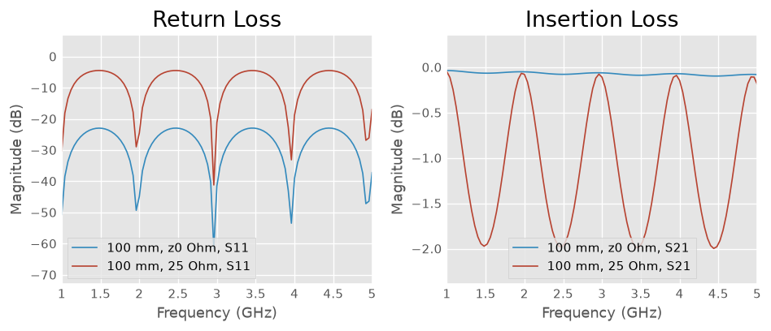
The return loss and insertion loss show the effect of the mismatch between the port impedance z0_port and the characteristic impedance z0 of the line, that is either defined by the geometry or forced to an arbitrary value.
Basic examples#
Let’s create two networks, a length of 50-Ohm planar microstripline and a length of WR-10 rectangular waveguide.
Microstripline |
Rectangular Waveguide |
|---|---|
First of all, create two Media objects with the model parameters.
Media objects#
Microstripline |
WR-10 Rectangular Waveguide |
||||
|---|---|---|---|---|---|
Track width |
|
3 mm |
Aperture width |
|
100 mil |
Track thickness |
|
35 um |
Aperture height |
|
50 mil |
Substrate height |
|
1.6 mm |
|||
Relative permittivity (FR-4) |
|
4.5 |
Relative permittivity (air) |
|
1.0 |
Resistivity (copper) |
|
1.68e-08 Ohm * m |
Resistivity (copper) |
|
1.68e-08 Ohm * m |
[6]:
# various initialization
%matplotlib inline
import matplotlib.pyplot as plt
import skrf as rf
# import the desired media and the frequency axis
from skrf import Frequency
from skrf.constants import to_meters
from skrf.media import MLine, RectangularWaveguide
rf.stylely()
# create frequency axes
f_mlin = Frequency(0.1, 10,1001, 'GHz')
f_wr10 = Frequency(75, 110, 1001,'GHz')
# create media from parameters
mlin = MLine(f_mlin, w = 3e-3, h = 1.6e-3, t = 35e-6, ep_r = 4.5, rho = 1.68e-08)
print(mlin)
wr10 = RectangularWaveguide(f_wr10, a = to_meters(100, 'mil'), b = to_meters(50, 'mil'), ep_r = 1.0, rho = 1.68e-08)
print(wr10)
Microstripline Media. 0.1-10.0 GHz. 1001 points
W= 3.00e-03m, H= 1.60e-03m
Rectangular Waveguide Media. 75.0-110.0 GHz. 1001 points
a= 2.54e-03m, b= 1.27e-03m
Line creation#
Secondly, use the Media objects to generate networks corresponding to a 100 millimeter length of both media.
[7]:
2-Port Network: 'mlin 100mm', 0.1-10.0 GHz, 1001 pts, z0=[49.66276711+0.j 49.66276711+0.j]
2-Port Network: 'wr10 100mm', 75.0-110.0 GHz, 1001 pts, z0=[610.32096719+0.12861446j 610.32096719+0.12861446j]
Plotting the results#
The S-Parameters of the lines are plotted in the figure below.
[8]:
# prepare figure
fig1, axes = plt.subplots(2, 2, figsize = (8, 6))
# plot miscrostipline
mlin_100.plot_s_mag(0, 0, ax = axes[0,0])
mlin_100.plot_s_db(1, 0, ax = axes[0,1])
# plot rectangular waveguide
wr10_100.plot_s_mag(0, 0, ax = axes[1,0])
wr10_100.plot_s_db(1, 0, ax = axes[1,1])
# resize plot nicely
axes[0, 0].set_ylim((-1, 1))
axes[1, 0].set_ylim((-1, 1))
fig1.tight_layout()
/home/alex/code/scikit-rf-docs/skrf/mathFunctions.py:303: RuntimeWarning: divide by zero encountered in log10
out = 20 * np.log10(z)
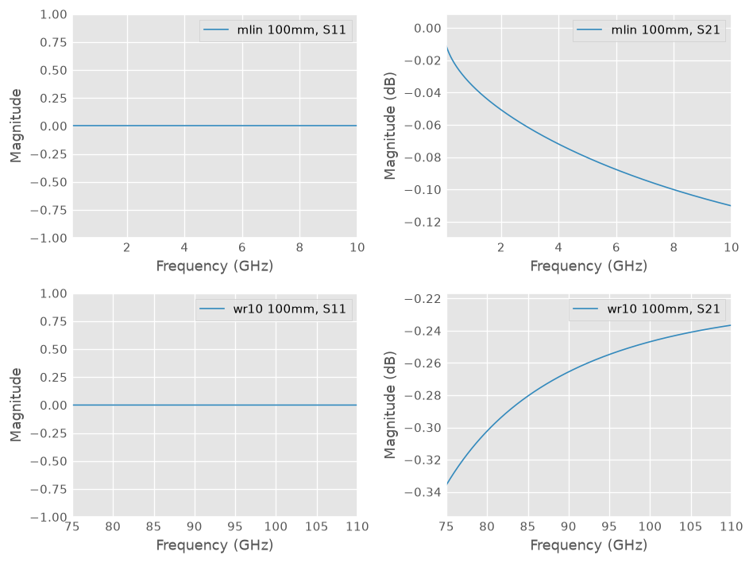
The insertion loss S21 of the transmission line is frequency dependent, but the S11 magnitude is constant and zero. The absolute magnitude of S11 was plotted instead of dB because log(0) is undefined.
Why does return loss S11 not show the shape observed on vector network analyzer measurements?
This is because no port impedance z0_port was specified at media construction. In this case, the characteristic impedance z0 is used as port impedance and the network is perfectly matched with itself on the whole frequency band.
The characteristic impedance is usually a frequency-dependent parameter. Having a frequency-dependent port impedance is often encountered in electromagnetic simulations. Real-world measurements use a constant port impedance instead.
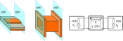
The port impedance z0 of the line network and the characteristic impedance z0 of the media are plotted below. These parameters are frequency-dependent. In both cases, the port impedance of the line equals the characteristic impedance of the media.
The port impedance of Network object is also z0 but it is not a characteristic impedance. The Network S-Parameters are normalized to its port impedance.
[9]:
# prepare figure
fig2, axes = plt.subplots(1, 2, figsize = (8, 3.5))
# plot miscrostipline
axes[0].plot(mlin_100.frequency.f_scaled, mlin_100.z0[:, 0].real, marker = '.',
label = f'line {mlin_100.name} port z0')
axes[0].plot(mlin.frequency.f_scaled, mlin.z0.real,
label = 'media mlin characteristic z0')
axes[0].set_ylabel('Impedance (Ohm)')
axes[0].set_xlabel(f'Frequency ({mlin.frequency.unit})')
axes[0].set_title('Microstripline')
axes[0].legend()
# plot rectangular waveguide
axes[1].plot(wr10_100.frequency.f_scaled, wr10_100.z0[:, 0].real, marker = '.',
label = f'line {wr10_100.name} port z0')
axes[1].plot(wr10.frequency.f_scaled, wr10.z0.real,
label = 'media wr10 characteristic z0')
axes[1].set_ylabel('Impedance (Ohm)')
axes[1].set_xlabel(f'Frequency ({wr10.frequency.unit})')
axes[1].set_title('WR-10')
axes[1].legend()
# resize plot nicely
fig2.tight_layout()
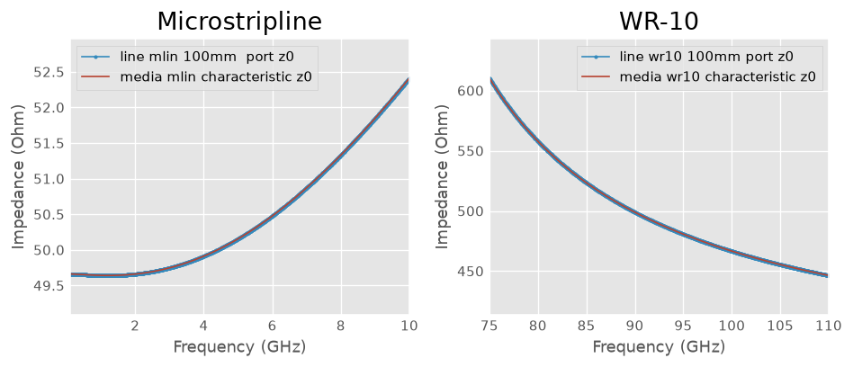
Measured-like microstripline#
S-Parameters measurement of a microstriplines is done with a VNA (Vector Network Analyzer). The VNA has a known port impedance - usually 50 Ohm - and coaxial connectivity.
A coaxial to microstripline transition is used and the VNA is calibrated at the end of the coaxial cable. In this example let’s assume an ideal transition (no length, perfect match on both sides).
Thus, the transition is only a mismatch between VNA port impedance z0_port and transmission line characteristic impedance z0.
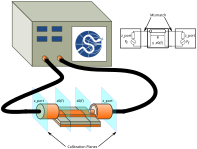
To get S-Parameter network with 50-Ohm port impedance, either the port impedance z0_port can be specified at media object construction or the line can be renormalized from characteristic to port impedance.
[10]:
# renormalization method
mlin_100_measured1 = mlin_100.copy()
mlin_100_measured1.renormalize([50, 50])
mlin_100_measured1.name = f'{mlin_100.name} renormalize'
print(mlin_100_measured1)
# port impedance specified at media construction method
mlin_meas = MLine(f_mlin, w=3e-3, h=1.6e-3, t=35e-6, ep_r=4.5, rho=1.68e-08, z0_port=50)
mlin_100_measured2 = mlin_meas.line(100e-3, unit = 'm', name = 'mlin 100mm z0_port')
print(mlin_100_measured2)
2-Port Network: 'mlin 100mm renormalize', 0.1-10.0 GHz, 1001 pts, z0=[50.+0.j 50.+0.j]
2-Port Network: 'mlin 100mm z0_port', 0.1-10.0 GHz, 1001 pts, z0=[50.+0.j 50.+0.j]
The plot below shows that the characteristic impedance of the microstripline is now embedded within a network with 50-Ohm port impedance. This is equivalent to a VNA measurement with an ideal coaxial to microstripline transition.
[11]:
# prepare figure
fig3, axes = plt.subplots(2, 2, figsize = (8, 6))
gs = axes[1, 0].get_gridspec()
for ax in axes[1, :]:
ax.remove()
axbig = fig3.add_subplot(gs[1, :])
# plot return loss
mlin_100_measured1.plot_s_db(0, 0, ax=axes[0,0])
mlin_100_measured2.plot_s_db(0, 0, ax=axes[0,0])
# plot insertion loss
mlin_100_measured1.plot_s_db(1, 0, ax=axes[0,1])
mlin_100_measured2.plot_s_db(1, 0, ax=axes[0,1])
# plot port and characteristic impedances
axbig.plot(mlin_100_measured1.frequency.f_scaled, mlin_100_measured1.z0[:, 0].real,
marker = 'd', markevery = 30, label = f'line {mlin_100_measured1.name} z0')
axbig.plot(mlin_100_measured2.frequency.f_scaled, mlin_100_measured2.z0[:, 0].real,
marker = 'x', markevery = 30, label = f'line {mlin_100_measured2.name} z0')
axbig.plot(mlin.frequency.f_scaled, mlin.z0.real, label = 'media mlin z0')
axbig.set_ylabel('Impedance (Ohm)')
axbig.set_xlabel(f'Frequency ({mlin.frequency.unit})')
axbig.legend()
# resize plot nicely
fig3.tight_layout()
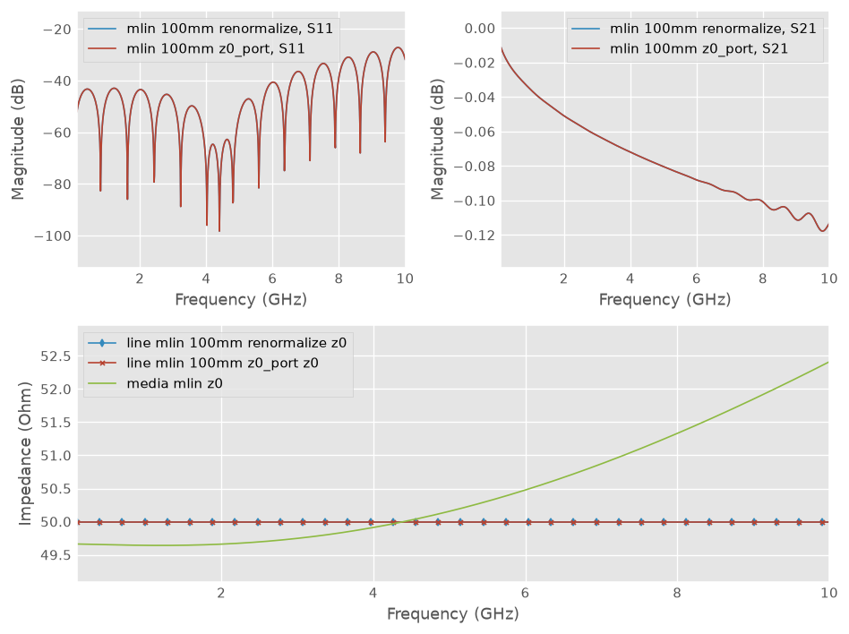
Measured-like WR-10 waveguide#
S-Parameters measurement of a hollow waveguide is done with a VNA (Vector Network Analyzer). The VNA has a known port impedance - usually 50 Ohm - and coaxial connectivity.
A coaxial to waveguide transition is used. The transition is calibrated at the waveguide interface. Thus, VNA port impedance override the characteristic impedance of the waveguide.
The measurement will store the port impedance instead of the characteristic impedance, which is lost. This is not normalization. The actual characteristic impedance of the line is not measured. This method is specific to hollow waveguides.
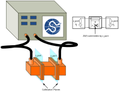
To get an S-Parameters network with 50-Ohm port impedance, either the port impedance z0_override can be specified at media object construction or the impedance can be overridden manually.
[12]:
# override method
wr10_100_measured1 = wr10_100.copy()
wr10_100_measured1.z0[:,:] = 50
wr10_100_measured1.name = f'{wr10_100.name} override'
print(wr10_100_measured1)
# port impedance at media construction method
wr10_meas = RectangularWaveguide(f_wr10, a=to_meters(100, 'mil'), b=to_meters(50, 'mil'), ep_r=1.0, rho=1.68e-08,
z0_override = 50)
wr10_100_measured2 = wr10_meas.line(100e-3, unit = 'm', name = 'wr10 100mm z0_port')
print(wr10_100_measured2)
2-Port Network: 'wr10 100mm override', 75.0-110.0 GHz, 1001 pts, z0=[50.+0.j 50.+0.j]
2-Port Network: 'wr10 100mm z0_port', 75.0-110.0 GHz, 1001 pts, z0=[50.+0.j 50.+0.j]
The plot below shows that the port impedance of the rectangular waveguide measurement is now 50 Ohm. The insertion loss S21 is equal for both methods. However, there is a slight S11 difference between manual override and port impedance specification at construction.
This is because the default s-parameter definition for network is s_def = 'power' and that the characteristic impedance has an imaginary part. For this reason, perfect match is not zero but complex conjugate. The manual override method does not gives the expected results.
[13]:
# prepare figure
fig4, axes = plt.subplots(2, 2, figsize = (8, 6))
gs = axes[1, 0].get_gridspec()
for ax in axes[1, :]:
ax.remove()
axbig = fig4.add_subplot(gs[1, :])
# plot return loss
wr10_100_measured1.plot_s_mag(0, 0, ax=axes[0,0])
wr10_100_measured2.plot_s_mag(0, 0, ax=axes[0,0])
# plot insertion loss
wr10_100_measured1.plot_s_db(1, 0, ax=axes[0,1])
wr10_100_measured2.plot_s_db(1, 0, ax=axes[0,1])
# plot port and characteristic impedances
axbig.plot(wr10_100_measured1.frequency.f_scaled, wr10_100_measured1.z0[:, 0].real,
marker = 'd', markevery = 30, label = f'line {wr10_100_measured1.name} z0')
axbig.plot(wr10_100_measured2.frequency.f_scaled, wr10_100_measured2.z0[:, 0].real,
marker = 'x', markevery = 30, label = f'line {wr10_100_measured2.name} z0')
axbig.plot(wr10.frequency.f_scaled, wr10.z0.real, label = 'media wr10 z0')
axbig.set_ylabel('Impedance (Ohm)')
axbig.set_xlabel(f'Frequency ({mlin.frequency.unit})')
axbig.legend()
# resize plot nicely
fig4.tight_layout()
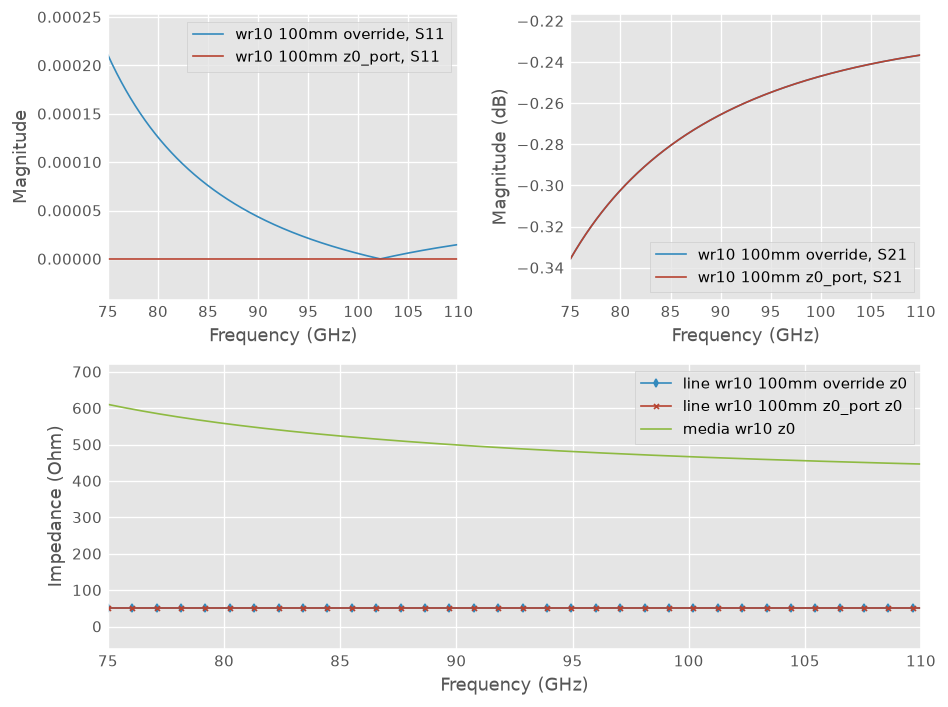
Parameter variation#
The construction parameters of the media can be varied. If, for example, we want to know how much the characteristic impedance and propagation constant of a microstripline would be affected by a change in relative permittivity of the substrate:
[14]:
#prepare
fig5, axes = plt.subplots(1, 2, figsize = (8, 3.5))
# plot
for ep_r in [4.0, 4.5, 5.0]:
ml = MLine(f_mlin, w=3e-3, h=1.6e-3, t=35e-6, ep_r=ep_r, rho=1.68e-08, z0_port=50)
axes[0].plot(f_mlin.f_scaled, ml.z0.real, label=f'ep_r={ep_r:.1f}')
axes[1].plot(f_mlin.f_scaled, ml.beta, label=f'ep_r={ep_r:.1f}')
axes[0].set_xlabel(f'Frequency ({f_mlin.unit})')
axes[0].set_ylabel('Characteristic Impedance (Ohm)')
axes[0].legend()
axes[1].set_xlabel(f'Frequency ({f_mlin.unit})')
axes[1].set_ylabel('Propagation Constant (rad/m)')
axes[1].legend()
# resize plot nicely
fig5.tight_layout()
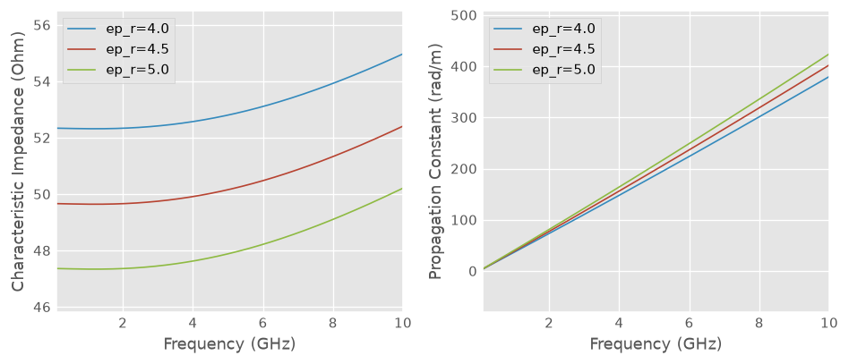
More detailed examples illustrating how to create various kinds of Media objects follow. The list of supported media is in the Media API page. The network creation and connection syntax of skrf are cumbersome if you need to doing complex circuit design. skrf’s synthesis capabilities lend themselves more to scripted applications such as calibration, optimization or batch processing.
Slab of Si in Freespace#
A plane-wave in freespace from 10 to 20 GHz.
[15]:
[15]:
Freespace Media. 10-20 GHz. 101 points
[16]:
air.z0[:2] # 377 Ohm baby!
[16]:
array([376.73031341+0.j, 376.73031341+0.j])
[17]:
array([112.56971215+0.j, 112.56971215+0.j, 112.56971215+0.j])
Simulate a 1cm slab of Si in half-space,
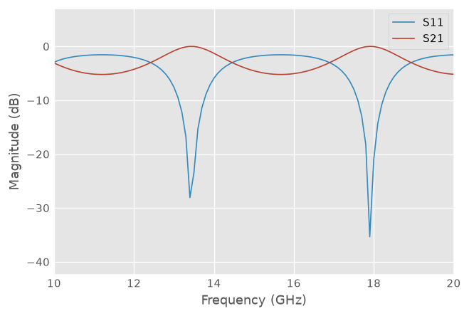
Network Synthesis#
Networks are created through methods of a Media object. To create a 1-port short for a microstripline,
[19]:
mlin_meas.short(name = 'short')
[19]:
1-Port Network: 'short', 0.1-10.0 GHz, 1001 pts, z0=[50.+0.j]
Or to create a \(90^{\circ}\) section of microstripline,
[20]:
mlin_meas.line(d = 90, unit = 'deg', name = 'line')
[20]:
2-Port Network: 'line', 0.1-10.0 GHz, 1001 pts, z0=[50.+0.j 50.+0.j]
Note
Simple circuits like Media.short
and Media.open are ideal short and open with
\(\Gamma = -1\) and \(\Gamma = 1\). They dont account the sophisticated effects of the discontinuities.
Eventually, these more complex networks could be implemented with methods specific to a given Media, e.g. MLine.mlin_short, should the need arise.
Building Circuits#
Complex circuits can be made by connecting a series of networks. Let’s build a \(90^{\circ}\) microstripline delay short.
[21]:
delay_short = mlin_meas.line(d = 90, unit = 'deg') ** mlin_meas.short()
delay_short.name = 'delay short'
delay_short
[21]:
1-Port Network: 'delay short', 0.1-10.0 GHz, 1001 pts, z0=[50.+0.j]
When Networks with more than 2 ports need to be connected together, use rf.connect(). To create a two-port network for a shunted delayed open, you can create an ideal 3-way splitter (a ‘tee’) and connect the delayed open to one of its ports,
[22]:
tee = mlin_meas.tee()
delay_open = mlin_meas.delay_open(40, unit = 'deg')
shunt_open = rf.network.connect(tee, 1, delay_open, 0)
Adding networks in shunt is so common, there is a Media.shunt() function to do this,
[23]:
[23]:
2-Port Network: '', 0.1-10.0 GHz, 1001 pts, z0=[50.+0.j 50.+0.j]
If a specific circuit is created frequently, it may make sense to use a function to create the circuit. This can be done most quickly using lambda
[24]:
delay_short = lambda d: mlin_meas.line(d, unit = 'deg') ** mlin_meas.short() # noqa: E731
delay_short(90)
[24]:
1-Port Network: '', 0.1-10.0 GHz, 1001 pts, z0=[50.+0.j]
A more useful example may be to create a function for a shunt-stub tuner, that will work for any media object.
[25]:
def shunt_stub(med, d0, d1):
return med.line(d0, unit = 'deg')**med.shunt_delay_open(d1, unit = 'deg')
shunt_stub(mlin_meas, 10, 90)
[25]:
2-Port Network: '', 0.1-10.0 GHz, 1001 pts, z0=[50.+0.j 50.+0.j]
This approach lends itself to design optimization.
Note
To connect complex circuits, you might be interested to use the skrf.circuit module.
Design Optimization#
The abilities of scipy’s optimizers can be used to automate network design. In this example, scikit-rf is used to automate the single stub impedance matching network design. First, we create a ‘cost’ function that returns something we want to minimize, such as the reflection coefficient magnitude at the band center. Then, one of scipy’s minimization algorithms is used to determine the optimal parameters of the stub lengths to minimize this cost.
[26]:
from scipy.optimize import fmin
from skrf.media import CPW
freq = Frequency(75, 110, 101, 'GHz')
cpw = CPW(freq, w = 10e-6, s = 5e-6, ep_r = 10.6, z0_port = 50)
# the load we are trying to match
load = cpw.load(.2+.2j)
# single stub circuit generator function
def shunt_stub(med, d0, d1):
return med.line(d0, unit = 'deg') ** med.shunt_delay_open(d1, unit = 'deg')
# define the cost function we want to minimize (this uses sloppy namespace)
def cost(d):
# prevent negative length lines, returning high cost
if d[0] < 0 or d[1] < 0:
return 1e3
return (shunt_stub(cpw, d[0], d[1]) ** load)[100].s_mag.squeeze()
# initial guess of optimal delay lengths in degrees
d0 = 120,40 # initial guess
#determine the optimal delays
d_opt = fmin(cost, (120, 40))
d_opt
Optimization terminated successfully.
Current function value: 0.232798
Iterations: 63
Function evaluations: 122
[26]:
array([227.04547462, 12.72478816])
[ ]: